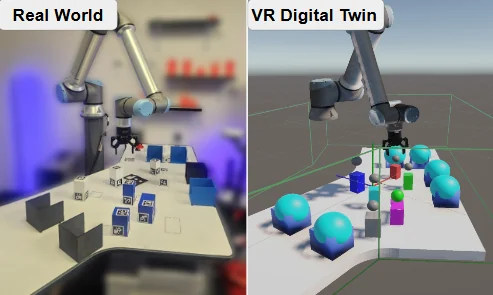
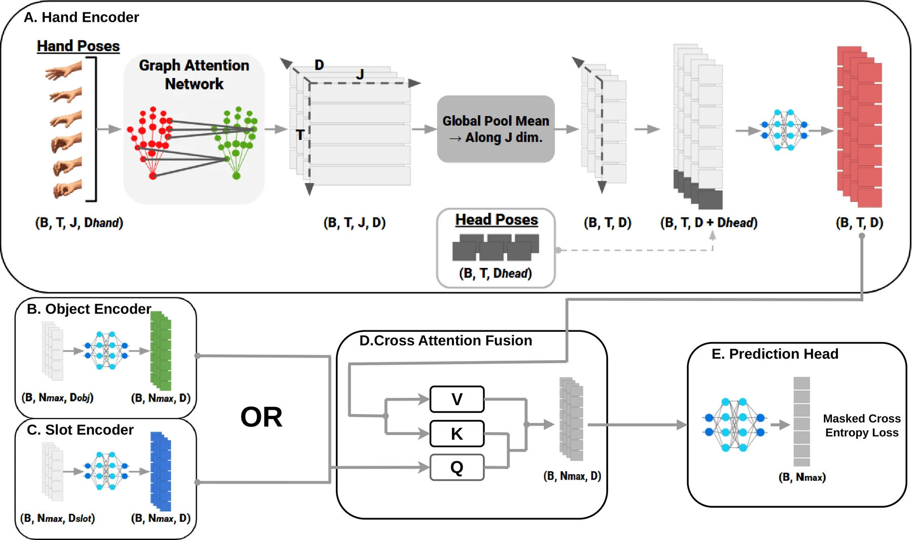
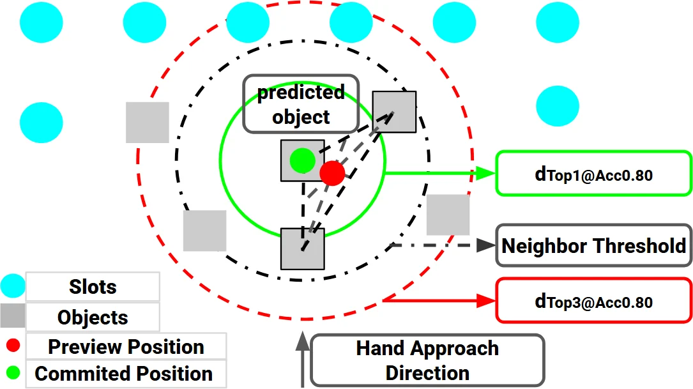
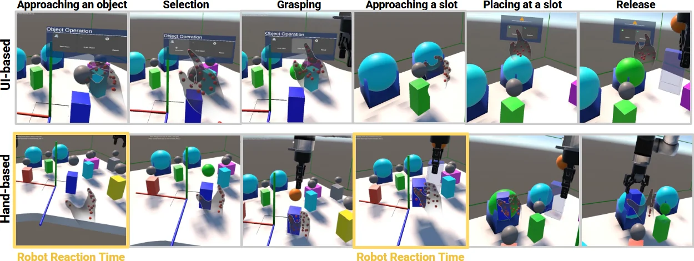

IEEE/RSJ IROS 2026 · Teleoperation
AHEAD: Anticipatory Hand-Driven Teleoperation via Human Intent Prediction
A VR teleoperation system that predicts which object an operator will pick and where they will place it from natural hand motion, so the robot starts moving before any explicit command.
- Authors
- Seok Joon Kim, Joonho Lee, Federica Spinola, Taein Kwon, Mohsen Moghaddam
- Topics
- VR teleoperation, human intent prediction, shared autonomy
- Venue
- IEEE/RSJ International Conference on Intelligent Robots and Systems (IROS), 2026
Motivation
Teleoperation forces a choice between effort and latency.
Direct teleoperation maps the operator’s hand to the robot at every frame: precise, but the operator must constantly correct drift and overshoot. Goal-based teleoperation lets the operator pick a goal and the robot plan the motion, but the robot sits idle until each goal is explicitly specified.
AHEAD keeps the low effort of goal-based control and recovers responsiveness by treating the operator’s ongoing reach as an early signal of the next goal. We measure the benefit as robot reaction time: the delay between the start of the operator’s reach and the start of robot motion toward the correct target.

System
A mirrored digital twin and an instance-agnostic scene.
The operator wears a Meta Quest 3 and performs pick-and-place in a digital twin of the remote workspace. The robot base is calibrated with a ChArUco board, and object poses are tracked in real time with ArUco markers, keeping the virtual and physical scenes aligned.

Inputs
- Hand: 21 tracked 3D joints of the right hand (OpenXR skeleton without metacarpals).
- Head: head position and forward ray, used as a proxy for gaze (the headset has no eye tracking).
- Scene: up to 10 objects encoded as cuboids (centroid + 8 corners) and up to 10 slots encoded as spheres (centre + radius), so any object reduces to a bounding box without a mesh encoder.
The model sees a sliding 0.5 s window (30 frames at 60 Hz), resampled to a fixed length. All quantities are expressed in a head-centric frame anchored at the start of the window, which emphasises hand-to-object geometry over absolute positions and helps transfer across layouts.
Intent prediction
Phase-specific attention over hand motion and scene entities.
Dataset
Five participants each completed 40 randomised scenes with 5 trials per scene, giving 1,000 pick-and-place trajectories with synchronised hand, head, scene, and event data (grasp, slot entry, release). Each scene contains 5–10 objects and 5–10 slots with randomised sizes and positions.

Model
A graph attention network (GATv2) encodes each frame of the hand skeleton; the per-frame embeddings are fused with head features and passed through temporal self-attention. Scene entities are embedded by an MLP, and entity tokens cross-attend to the hand sequence, producing one logit per candidate. Intent is a masked classification over at most 10 candidates.
Two models share this architecture: an object model before the grasp and a slot model after it, switched by the VR grasp event. Decoupling them outperformed a single multi-task model, since reaching and transport have different motion patterns. Exported to ONNX, each forward pass takes about 2.6 ms.

Control
Turning noisy predictions into stable robot motion.
Acting on the raw per-frame prediction would make the robot jitter between candidates. Because prediction reliability grows as the hand approaches its target, AHEAD gates robot behaviour on hand-to-target distance, using two thresholds measured on validation data:
- Preview: once the hand is within the distance where Top-3 accuracy exceeds 80%, the robot moves to a hover point above the centre of the three most likely nearby candidates.
- Commit: once within the distance where Top-1 accuracy exceeds 80%, the robot commits to the single predicted target and latches it, with hysteresis against switching.


Evaluation
Earlier, more reliable predictions and faster robot response.
Offline intent prediction
Evaluated with leave-one-subject-out cross-validation against a nearest-candidate heuristic. The learned model is both more accurate and reliable earlier: it reaches 80% Top-3 accuracy 0.36 m (objects) and 0.28 m (slots) farther from the target.
| Method | Object Acc | Object T3 Cross | Slot Acc | Slot T3 Cross |
|---|---|---|---|---|
| Nearest | 0.52 / 0.70 | 0.49 s / 0.26 m | 0.63 / 0.74 | 1.12 s / 0.40 m |
| Unified (single model) | 0.75 / 0.88 | 0.98 s / 0.54 m | 0.75 / 0.90 | 1.58 s / 0.65 m |
| AHEAD (decoupled) | 0.76 / 0.90 | 1.04 s / 0.62 m | 0.76 / 0.91 | 1.62 s / 0.68 m |
User study
Fifteen participants moved six objects into six slots on the real UR10e under four interfaces, in counterbalanced order and with a scene layout not seen during training. UI uses explicit menus; Dwell selects after a 1 s dwell; Nearest picks the closest object; AHEAD uses the same flow as Nearest but predicts intent.

| Measure | UI | Dwell | Nearest | AHEAD |
|---|---|---|---|---|
| Reaction time, object (s) ↓ | 3.7 | 3.0 | 1.5 | 0.9 |
| Reaction time, slot (s) ↓ | 4.5 | 2.3 | 2.2 | 0.8 |
| Naturalness ↑ | 4.2 | 5.1 | 7.8 | 8.6 |
| Efficiency ↑ | 4.7 | 5.2 | 7.7 | 8.1 |
| Trust ↑ | 6.5 | 5.9 | 7.7 | 7.9 |
All conditions reached 100% task completion, so the key difference is responsiveness: AHEAD had the shortest reaction times, and occasional prediction errors did not prevent task completion. NASA-TLX mental and physical demand were lowest for AHEAD, and effort was significantly lower than with Dwell.
Limitations
Limitations and future work.
- Marker-based tracking: object poses come from ArUco markers; markerless pose estimation would remove this deployment constraint.
- Dataset scale: 1,000 trajectories from five people limit how far cross-user and cross-layout generalisation can be characterised.
- Target identity only: AHEAD predicts which object and slot, not approach direction, so orientation-aware grasping is future work.
Citation
Citation
@inproceedings{kim2026ahead,
title = {{AHEAD}: Anticipatory Hand-Driven Teleoperation via Human Intent Prediction},
author = {Kim, Seok Joon and Lee, Joonho and Spinola, Federica and Kwon, Taein and Moghaddam, Mohsen},
booktitle = {IEEE/RSJ International Conference on Intelligent Robots and Systems (IROS)},
year = {2026}
}